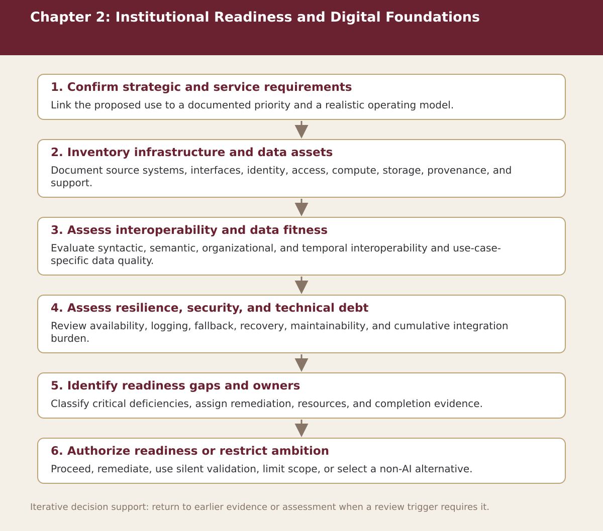

Chapter 2
Institutional Readiness and Digital Foundations
Chapter-level process map linking the chapter’s decision questions to the companion resources and decision gates.

Process steps
| Step | Stage | Purpose | Required Input | Expected Output | Decision Or Gate |
|---|---|---|---|---|---|
| 1 | Confirm strategic and service requirements | Link the proposed use to a documented priority and a realistic operating model. | Local evidence and the prior approved step | Versioned record for: Confirm strategic and service requirements | Proceed, revise, escalate, restrict, or stop as appropriate |
| 2 | Inventory infrastructure and data assets | Document source systems, interfaces, identity, access, compute, storage, provenance, and support. | Local evidence and the prior approved step | Versioned record for: Inventory infrastructure and data assets | Proceed, revise, escalate, restrict, or stop as appropriate |
| 3 | Assess interoperability and data fitness | Evaluate syntactic, semantic, organizational, and temporal interoperability and use-case-specific data quality. | Local evidence and the prior approved step | Versioned record for: Assess interoperability and data fitness | Proceed, revise, escalate, restrict, or stop as appropriate |
| 4 | Assess resilience, security, and technical debt | Review availability, logging, fallback, recovery, maintainability, and cumulative integration burden. | Local evidence and the prior approved step | Versioned record for: Assess resilience, security, and technical debt | Proceed, revise, escalate, restrict, or stop as appropriate |
| 5 | Identify readiness gaps and owners | Classify critical deficiencies, assign remediation, resources, and completion evidence. | Local evidence and the prior approved step | Versioned record for: Identify readiness gaps and owners | Proceed, revise, escalate, restrict, or stop as appropriate |
| 6 | Authorize readiness or restrict ambition | Proceed, remediate, use silent validation, limit scope, or select a non-AI alternative. | Local evidence and the prior approved step | Versioned record for: Authorize readiness or restrict ambition | Proceed, revise, escalate, restrict, or stop as appropriate |